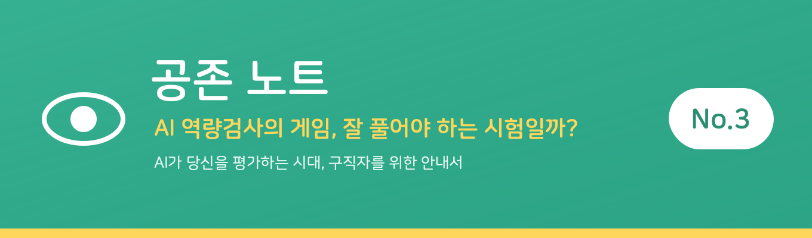
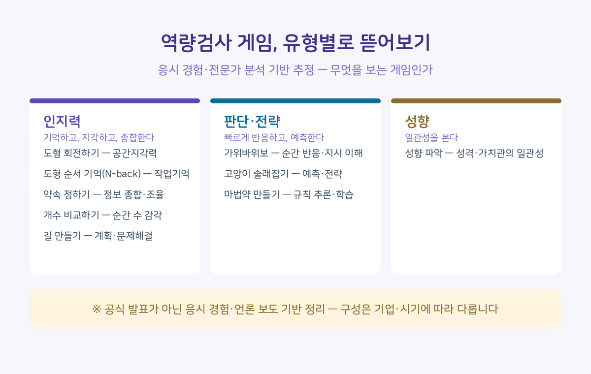

지난 호에서 거부할 권리를 이야기했습니다. 오늘은 조금 더 안으로 들어가 봅니다. AI 역량검사를 보면, 갑자기 게임이 나옵니다. 도형을 돌리고, 공 무게를 재고, 고양이를 잡습니다.

많은 사람이 이 게임을 '잘 풀어야 하는 시험'이라고 생각합니다. 그런데 사실은 반대에 가깝습니다. 이 검사는 당신이 얼마나 잘 푸는지보다, 당신이 '어떻게 틀리는지'를 봅니다.
게임은 당신이 '틀리는 방식'을 본다
먼저 큰 오해부터 풀어야 합니다. 이 게임들은 잘 풀어서 이기는 시험이 아닙니다. 점수 자체보다, 당신이 문제를 대하는 방식을 봅니다. 얼마나 빠르게 판단하는지, 실수한 뒤 어떻게 바꾸는지, 압박 속에서 일관성을 유지하는지 같은 것들입니다.
특히 '실수한 뒤의 반응'이 핵심입니다. 한 번 틀렸을 때 무너지는지, 침착하게 다음으로 넘어가는지 — 게임은 그 회복 과정까지 기록합니다. 즉 만점이 목표가 아니라, 틀리는 순간에 드러나는 당신의 패턴이 곧 데이터입니다.
그래서 "고득점 공략법"은 대체로 통하지 않습니다. 게임은 결과가 아니라 과정의 패턴을 기록하기 때문입니다.
이건 추측이 아닙니다. 개발사인 마이다스인 측도 한 언론 인터뷰에서 "전략 게임은 정답을 맞히는 시험이 아니라, 문제 해결 과정에서 드러나는 행동 패턴을 평가한다"며 "반복 응시해도 점수가 크게 오르지 않는다"고 밝힌 바 있습니다.
참고로 개발사 측 분석에 따르면, 이 검사 점수와 실제 근무 성과의 상관관계는 면접·학벌·학력 등 기존 채용 요소보다 높게 나타났다고 합니다. 다만 이는 개발사가 자사 검사의 타당성을 입증하기 위해 제시한 자료라는 점은 감안할 필요가 있습니다.
그러니 이 글의 목적도 '합격하는 법'이 아닙니다. '무엇을 보는지 알고, 덜 당황하는 것'입니다.
유형별로 뜯어보기
아래 정리한 '무엇을 보나'는 마이다스인의 공식 발표가 아니라, 응시 경험과 전문가 분석에 근거한 추정입니다. 게임 구성은 기업·시기에 따라 다를 수 있습니다.

이 게임들의 목적이 '순간적인 능력 측정'이라, 미리 방식을 알아두면 정답을 맞히기보다 당황을 줄이는 데 도움이 됩니다.
컨디션이 곧 실력입니다
마지막으로, 이 검사에서 가장 저평가되는 요소입니다. 반응 속도와 작업기억이 측정 대상이므로, 수면·집중 상태가 결과에 직접 영향을 줍니다. 응시 시간대를 컨디션이 가장 좋은 때로 잡는 것이, 어설픈 공략보다 실질적입니다.
맺음말
게임이 이상하게 느껴졌던 건, 그게 능력을 재는 도구라는 걸 몰랐기 때문이 아닙니다. 그게 '무엇을' 재는지, 특히 틀리는 순간에 무엇을 보는지 몰랐기 때문입니다. 그걸 알고 나면, 최소한 막연한 두려움은 줄어듭니다.
공존 노트는, 게임으로 사람을 판단하는 것이 정당한지에 대한 질문은 계속 남겨두어야 한다고 봅니다. 준비법을 아는 것과, 그 방식이 옳은지 묻는 것은 별개의 일이니까요.

확인된 사실들
• 게임은 점수(결과)가 아니라 문제를 대하는 과정의 패턴을 기록한다 — 특히 실수 후 회복
• 개발사(마이다스인)도 "반복 응시해도 점수가 크게 오르지 않는다"고 밝혔다
• 점수-성과 상관관계 자료는 개발사가 제시한 자료라는 점은 감안 필요
• 게임 구성은 기업·시기에 따라 다를 수 있다 (공식 발표 아닌 응시 경험 기반 정리)

이렇게 대비하세요
• 속도보다 지시 확인이 먼저 — '이겨라/져라' 지시가 순간순간 바뀝니다
• 튜토리얼을 대충 넘기지 말 것 — 규칙을 놓치면 본 게임 내내 헤맵니다
• 틀려도 멈칫하지 말고 바로 다음으로 — 게임은 '실수 후 회복'도 봅니다
• 성향 검사는 꾸미지 말고 솔직·일관되게 — 꾸민 답은 걸러지게 설계돼 있습니다
• 컨디션 좋은 시간대에 응시하세요 — 수면·집중이 결과에 직접 영향을 줍니다

다음 호에서는 'AI는 내 표정과 목소리로 무엇을 판단할까?' 를 다룹니다. 영상 면접에서 AI가 실제로 읽는 것과 읽지 못하는 것을 정리합니다.
이 글이 도움이 됐다면, 지금 취업을 준비하는 친구에게 공유해주세요.